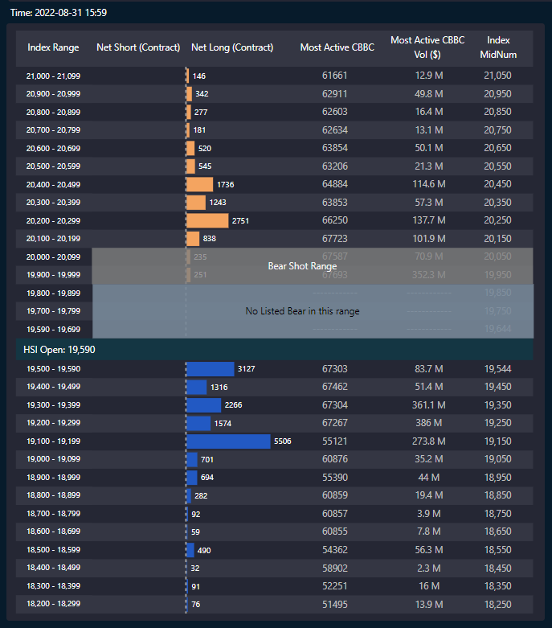
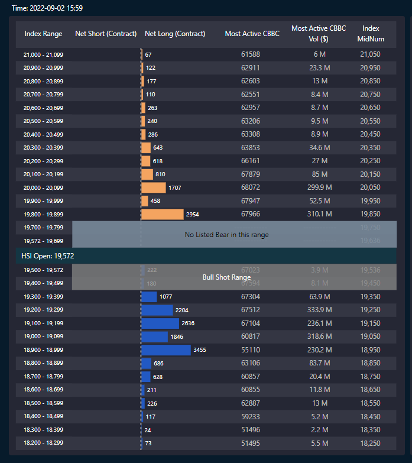
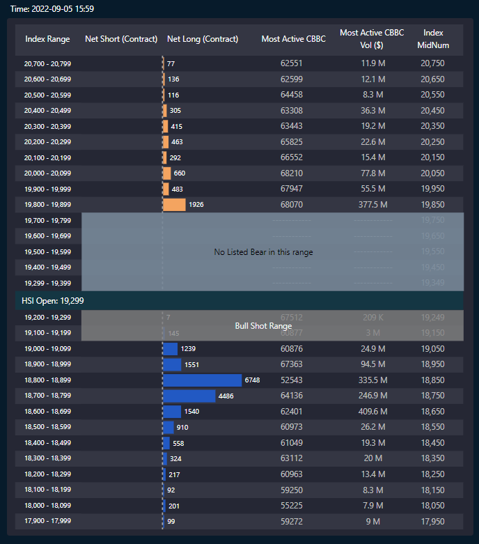

有看舊專欄的朋友，都知道有一個我最喜愛用來炒恒指的因子，就是牛熊證。以我所知，patreon的subscriber中，有prop trading的，有hedge fund的，也有ibank的，有不少buy side人都叫我不要放那麼多有效因子出來，任何人只付20usd就能拿到我們辛苦找到的策略。
的而且確，因為多了人知，策略就沒那麼有效。這是對的，但我反而想看看，如果我不斷promote這個因子，到哪個時候才會失效呢？反正這個因子已經work了9年，看著它失效也是一種樂趣。(失效的可能就是沒有散戶再玩牛熊，那也是好事啊。賭牛熊的都是本金少的窮人，窮人因為想賺錢而輸錢是件很慘的事。)
Anyway，背後原理就不詳述了，舊專欄已經寫了幾次，有興趣可以翻看舊文章，舊文章多看有益。有新patreon subscriber經常說一個月只看到4篇「唔夠喉」，但事實上，你要看的，是過往3年的文章，一共有156篇。
單刀直入，先看8月31的即市牛熊圖：

再看9月2的即市牛熊圖：

再看9月5的即市牛熊圖：

8月31日191牛大量流入，9月2日189-192牛大量流入，9月5日187-188牛大量流入。反之熊證則並不受歡迎。證明散戶都在博恒指反彈，或者並不會在190附近徘徊太久。
話雖恒指估值便宜，就如我於半年前（3月）所講，PE、PB已經很便宜。以當時來說的確是反市場的說法，很多人認為有可能下探150。
及後，恒指的確由182大彈至220以上，足足2成彈幅。不過，近一個月開始，多了KOL指恒指估值便宜云云，不太肯定這是否散戶瘋狂掃入牛證的原因。
總之，牛熊證為我常用的恒指短線因子之一，而此刻牛熊失衡，即管看看恒指會否下探至185-187水平。
不過，不能當此為中長線貼士，皆因牛熊證數據每天都會變，必須留意。例如如果未來熊證不斷有資金流入，而牛證流走，那下跌機會便減少；抑或跌到185-187後，牛證街貨繼續上升，那恒指並不會在185-187停步。
加上，沒有策略勝率100%，單一因子的啟示只供參考。
當然，我做的是投資者教育，所以重申這並不是一個投資建議。我最想大家做到，有自己一套系統。因為不時會有patreon subscribers指，他們一早已經拿來牛熊證數據backtest，並已寫成algo替他們自動交易，這實是令我老懷安慰。到了這個境界，你就有自己一套量化交易系統，不用再到處聽消息，不用再人手亂炒了。